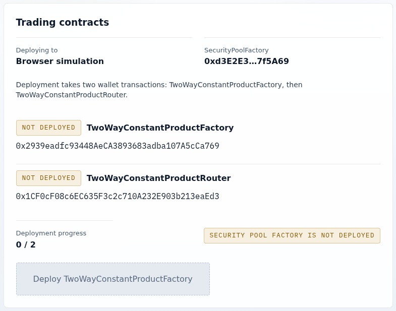

How-to guide
Deploy the Trading contracts
Trading needs one factory and one router at addresses derived from the Statoblast deployment. Use this guide to deploy them from the browser on a network where Statoblast is installed, or with the testnet deployer on a local Anvil node.
Before you start
The Statoblast core, including its SecurityPoolFactory, must already be deployed on the network. The root mainnet and Sepolia manifests list planned addresses; they do not prove the contracts are live, as the deployment status reference explains. Continue only after you have confirmed reviewed core code at those addresses.
Deploy from the browser
From ui/trading, start the standalone UI:
docker network inspect zoltar >/dev/null 2>&1 \
|| docker network create zoltar
docker compose up --build --force-recreateFor local source development, run bun run app:serve:trading from the repository root instead.
- Open
http://localhost:4163/#/deploy. To use another network or RPC URL, set it under Settings before connecting. - Select Connect wallet. The Trading contracts panel shows the
SecurityPoolFactoryaddress and the status of the TwoWayConstantProductFactory (the Trading factory) and TwoWayConstantProductRouter (the Trading router). - Select Deploy TwoWayConstantProductFactory and confirm, then deploy the router the same way. Deployment progress reaches
2 / 2once both contracts and their links are verified. If you leave and return with the same settings, the flow resumes at the first missing contract.

The factory's trading fee is fixed at 0.30% and cannot be changed after deployment. Creating a trading pool for a market is a separate step; see Your first Trading market.
Use local Anvil
The UIs do not offer Ethereum mainnet, so run Anvil as a Sepolia replay (chain ID 11155111) and use the Sepolia address profile:
bun run anvil -- --chain-id 11155111- Deploy to the node with the testnet deployer, following Deploy locally with
--rpc-url=http://127.0.0.1:8545and an Anvil account's key. It installs the core and the Trading factory and router. Its final explorer-verification step targets public Sepolia, so a failure there does not mean the local deployment failed. - In your wallet, point the chain
11155111network athttp://127.0.0.1:8545and import an Anvil account. Once a wallet is connected, the UI reads and sends through the wallet's RPC, so a wallet still on public Sepolia would use the real network. - Start the Trading UI, connect the wallet, and open
#/deploy. Deployment progress shows2 / 2.
Deploy for script and integration tests
The local deployment script deploys independent copies at ordinary CREATE addresses. The UI never finds them, because it looks only at the derived addresses; use them from scripts and integration tests only.
ZOLTAR_DEPLOYMENT_MANIFEST=docs/sepolia-deployment-addresses.json \
TRADING_RPC_URL=http://127.0.0.1:8545 \
bun run trading:deploy:localThe script checks for code at the manifest's SecurityPoolFactory, deploys TwoWayConstantProductFactory(coreFactory, feeBps) and TwoWayConstantProductRouter(factory), and writes a manifest of its inputs, addresses, transaction hashes, and bytecode hashes. The configuration reference lists its environment variables and output.